Table des matières
Semblable à d'autres systèmes d'exploitation de bureau ou mobiles, Xubuntu est livré avec une apparence par défaut que certains utilisateurs préféreront personnaliser selon leurs besoins. Contrairement à Windows, Mac OS et certains environnements de bureau Linux, Xubuntu est préinstallé avec de nombreux outils de personnalisation qui donnent aux utilisateurs beaucoup de contrôle.
Les paramètres de personnalisation de Xubuntu sont accessibles depuis la catégorie Personnel du  , la catégorie Paramètres du
, la catégorie Paramètres du  (Ctrl + Échap), la Liste d'applications (Alt + F3), ou le menu contextuel d'un objet.
(Ctrl + Échap), la Liste d'applications (Alt + F3), ou le menu contextuel d'un objet.
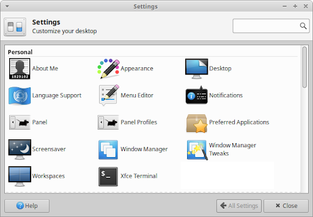
La disposition des panneaux par défaut de Xubuntu comporte un seul panneau en haut de l'écran avec le menu, la liste des fenêtres et la zone de notification. Cette disposition de panneau peut être commutée vers une autre disposition de panneau groupée ou peut être personnalisée manuellement.
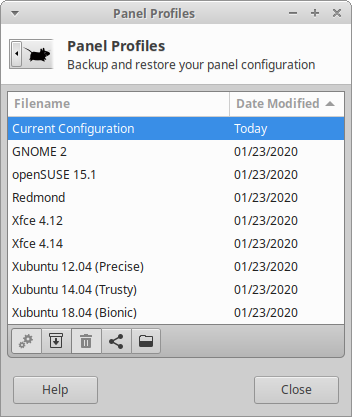
La boîte de dialogue de paramètres des profils du tableau de bord facilite le passage à l'une des dispositions de panneaux groupées ou l'application d'une disposition de panneaux importée. Cela facilite également l’enregistrement de la disposition actuelle de vos panneaux et son exportation.
- Cette disposition est inspirée de la disposition par défaut des panneaux de l'environnement de bureau GNOME 2, qui comporte un panneau en haut et en bas. Le panneau supérieur comporte un menu arborescent classique, un menu contextuel, des paramètres et des lanceurs de navigateur, ainsi qu'une zone de notification, tandis que le panneau inférieur comporte le bouton Afficher le bureau, la liste des fenêtres et le sélecteur d'espace de travail.
- Il s'agit de la présentation par défaut trouvée dans l'édition Xfce d'openSUSE, qui comporte un seul panneau en bas avec un menu de recherche moderne, un bouton d'affichage du bureau, une liste de fenêtres, un sélecteur d'espace de travail et une zone de notification.
- Cette disposition est inspirée de Microsoft Windows XP, avec un seul panneau en bas comportant un menu classique, une liste de fenêtres et une zone de notification.
- Il s'agit de la disposition par défaut de Xfce 4.12 qui contient un panneau en haut et en bas. Le panneau supérieur comporte un menu classique, une liste de fenêtres, un sélecteur d'espace de travail et une zone de notification, tandis que le panneau inférieur centré comporte un bouton Afficher le bureau, un bouton Dossiers utilisateur et divers lanceurs d'applications.
- Il s'agit de la disposition par défaut de Xfce 4.14 et est similaire à la disposition du panneau de Xfce 4.12, à l'exception d'un panneau supérieur plus petit avec des indicateurs audio, de batterie et de notification supplémentaires.
- Il s'agissait de la disposition des panneaux par défaut utilisée dans la version LTS 2012 de Xubuntu et est similaire à la disposition du panneau de Xfce 4.12, mais comporte un panneau de masquage automatique en bas.
- Il s'agissait de la disposition de panneau par défaut utilisée dans la version LTS 2014 de Xubuntu et comporte un seul panneau en haut, avec un menu de recherche moderne, une liste de fenêtres et une zone de notification.
- Il s'agissait de la disposition du panneau par défaut utilisée dans la version LTS 2018 de Xubuntu et est similaire à la disposition du panneau dans Xubuntu 14.04 (Trusty), avec l'ajout d'indicateurs audio et de notification.
Pour apporter des modifications mineures aux panneaux de Xubuntu, vous pouvez procéder comme suit :
Faites glisser un lanceur d'applications depuis le  , ou le Bureau ou la Liste d'applications sur le panneau afin de l'ajouter au panneau.
, ou le Bureau ou la Liste d'applications sur le panneau afin de l'ajouter au panneau.
Cliquez avec le bouton droit sur un lanceur d'applications dans le  puis sélectionnez l'entrée Ajouter au panneau dans le menu de contexte afin de l'ajouter au panneau.
puis sélectionnez l'entrée Ajouter au panneau dans le menu de contexte afin de l'ajouter au panneau.
Cliquez avec le bouton droit sur l'un des éléments du panneau et sélectionnez les entrées Propriétés, Déplacer, ou Supprimer dans le menu contextuel pour personnaliser, déplacer vers la position souhaitée ou supprimer du panneau.
Cliquez avec le bouton droit sur l'un des éléments du panneau et sélectionnez Tableau de bord -> Ajouter de nouveaux éléments... pour ajouter un nouvel élément au panneau.
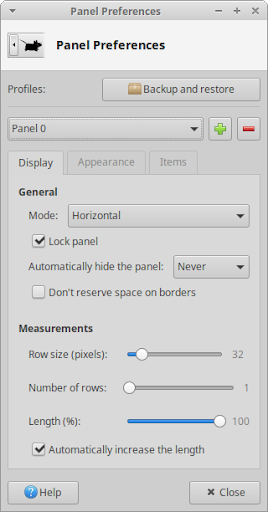
Pour d'autres modifications apportées aux panneaux, vous devrez ouvrir la boîte de dialogue de paramètres Panneau, qui est également accessible en cliquant avec le bouton droit sur l'un des éléments du panneau et en sélectionnant Panneau -> Préférences du tableau de bord... La section supérieure de la boîte de dialogue donne accès à l'ouverture de la boîte de dialogue des profils de tableaux de bord et à la possibilité de sélectionner, d'ajouter et de supprimer des panneaux. Le reste des paramètres est réparti sur trois onglets.
- Sur cet onglet, vous pouvez définir la largeur et la hauteur du panneau, l'orientation verticale ou horizontale, la position sur l'écran et le comportement de masquage. Pour déplacer le panneau, vous devrez décocher le panneau de verrouillage et le faire glisser par l'une des deux poignées qui apparaissent de chaque côté.
Apparence - Sur cet onglet, vous pouvez définir la transparence du panneau, la taille de l'icône et si son arrière-plan est une couleur ou une image.
- Cet onglet vous permet d'ajouter, d'organiser et de supprimer des plugins, ainsi que d'accéder aux propriétés du plugin via la barre de boutons. Il est également possible de réorganiser les éléments en les faisant glisser avec la souris, et d'accéder aux propriétés en double-cliquant.
Il est possible d'installer des plugins de panneau supplémentaires, également appelés applets de panneau. Les plugins de panneau non répertoriés dans la boîte de dialogue Ajouter de nouveaux éléments devront être installés avant de pouvoir être utilisés. Certains des plugins sont répertoriés ici et les plus populaires/utiles sont pour la gestion du presse-papiers ( xfce4-clipman-plugin
xfce4-clipman-plugin xfce4-appmenu-plugin
xfce4-appmenu-plugin
Les utilisateurs qui souhaitent un dock similaire à celui trouvé sur Mac OS et Elementary OS peuvent choisir parmi ces docks - Plank ( plank
plank
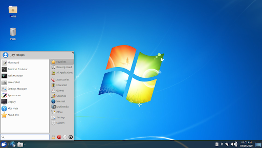
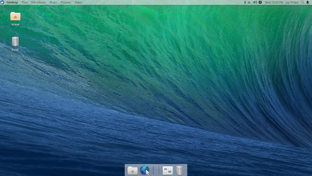
![[Note]](../../libs-common/images/note.png)
|
|
|
Si vous disposez de plusieurs écrans, des configurations de panneau supplémentaires apparaîtront dans l'onglet Affichage, y compris les options permettant de configurer l'affichage sur lequel le panneau doit apparaître ou si le panneau doit s'étendre sur tous les moniteurs. |
La modification la plus simple que vous puissiez apporter au  consiste à personnaliser vos favoris, afin que vous ayez un accès facile à vos applications les plus importantes/utilisées dès que vous l'ouvrez. Vous avez les options pour :
consiste à personnaliser vos favoris, afin que vous ayez un accès facile à vos applications les plus importantes/utilisées dès que vous l'ouvrez. Vous avez les options pour :
Ajoutez une application en localisant l'application soit en la recherchant par son nom, soit en parcourant les catégories, en cliquant dessus avec le bouton droit et en sélectionnant Ajouter aux Favoris dans le menu contextuel.
Supprimez une application en cliquant avec le bouton droit sur une application dans les Favoris et en sélectionnant Retirer des favoris dans le menu contextuel.
Réorganisez/repositionnez une application en cliquant avec le bouton gauche sur une application dans les Favoris et en la faisant glisser vers la position souhaitée.
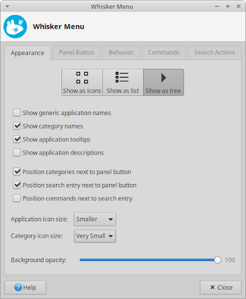
Pour les options permettant de personnaliser l'apparence et la convivialité du  , faites un clic droit sur le bouton de menu et sélectionnez Propriétés dans le menu contextuel pour lancer la boîte de dialogue des paramètres du Menu Whisker. La boîte de dialogue est divisée en onglets pour :
, faites un clic droit sur le bouton de menu et sélectionnez Propriétés dans le menu contextuel pour lancer la boîte de dialogue des paramètres du Menu Whisker. La boîte de dialogue est divisée en onglets pour :
Apparence - Contient des options sur l'apparence des applications et des catégories, ainsi que sur l'emplacement de la liste des applications, de la liste des catégories, du champ de recherche et des boutons de commande.
Bouton du panneau - Sélectionnez si le bouton Menu est une icône, une étiquette de texte ou une icône et une étiquette, et quelle doit être cette étiquette.
Comportement - Décidez de l'apparence du menu, notamment si les catégories doivent être sélectionnées une fois que la souris les survole, si le menu doit rester ouvert même lorsque le focus est perdu, si la catégorie Récemment utilisées doit être affichée par défaut et si les commandes de session devrait avoir des boîtes de dialogue de confirmation.
Commandes - Activez ou désactivez l'apparence du gestionnaire de paramètres et des commandes de session dans la section des boutons de commande du menu, ainsi que l'apparence de l'entrée Modifier les applications dans le menu contextuel du bouton Menu.
Actions de recherche - Répertorie les différents modèles de mots-clés qui peuvent être utilisés pour étendre les fonctionnalités du champ de recherche et faciliter la recherche dans d'autres sources comme Wikipédia ou le système de fichiers.
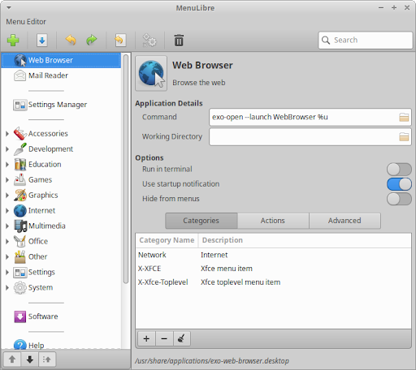
Pour personnaliser les applications qui apparaissent dans le  , ouvrez l'utilitaire Éditeur de menus, qui est également accessible en cliquant avec le bouton droit sur le bouton Menu et en choisissant Modifier l'application dans le menu contextuel. À l'aide de cet éditeur, vous pouvez créer de nouveaux lanceurs ou catégories d'applications, ainsi que modifier les détails de ceux existants, y compris les catégories dans lesquelles l'application apparaît, si l'application sera visible dans le menu et l'icône ou le nom utilisé par l'application.
, ouvrez l'utilitaire Éditeur de menus, qui est également accessible en cliquant avec le bouton droit sur le bouton Menu et en choisissant Modifier l'application dans le menu contextuel. À l'aide de cet éditeur, vous pouvez créer de nouveaux lanceurs ou catégories d'applications, ainsi que modifier les détails de ceux existants, y compris les catégories dans lesquelles l'application apparaît, si l'application sera visible dans le menu et l'icône ou le nom utilisé par l'application.
|
|
|
|
Pour des informations plus détaillées sur l'utilisation de toutes ces options, consultez la documentation en ligne de MenuLibre. |
Le bureau est visible une fois connecté à votre compte et son arrière-plan est également présent sur les écrans de connexion et de verrouillage. Pour accéder aux options de personnalisation, ouvrez la boîte de dialogue de paramètres du bureau, qui est également accessible en cliquant avec le bouton droit sur une zone vide du bureau et en sélectionnant Paramètres du bureau dans le menu contextuel.
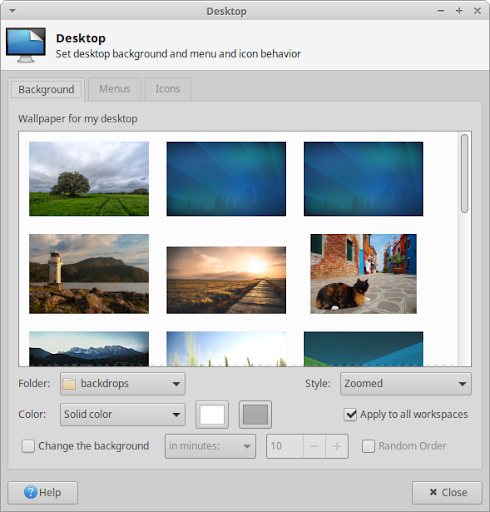
Une fois la boîte de dialogue paramètres de Bureau lancée, l'onglet Arrière-plan vous propose des options pour choisir entre une image de fond d'écran, un dégradé de couleurs, une couleur unique ou une combinaison de fond d'écran et de couleur(s) comme arrière-plan du bureau.
Lorsque vous choisissez une image comme arrière-plan dans la liste des fonds d'écran, vous pouvez choisir parmi la sélection par défaut fournie avec Xubuntu ou sélectionner une image dans un autre dossier en modifiant la liste déroulante Dossier. Vous avez la possibilité de définir la façon dont le fond d'écran s'adaptera à l'écran dans la liste déroulante Style. La valeur par défaut est Zoomé, qui redimensionne l'image en préservant son rapport hauteur/largeur et en recadrant l'image pour remplir l'écran. Si vous avez plusieurs moniteurs connectés, la liste déroulante comportera également une entrée Écrans étendus, pour étirer le fond d'écran des écrans.
S'il y a plusieurs images dans la liste des fonds d'écran, vous avez également la possibilité de définir l'arrière-plan pour qu'il les parcoure automatiquement dans une séquence ordonnée ou aléatoire. En cochant la case Modifier l'arrière-plan, vous disposez de plusieurs options basées sur le temps. La dernière option, Chronologiquement, définit les fonds d'écran afin qu'ils apparaissent sur des périodes régulières de la journée.
|
|
|
|
La sélection par défaut de fonds d'écran livrés avec Xubuntu comprend des fonds d'écran créés par l'équipe Xubuntu pour différentes versions et des fonds d'écran soumis par la communauté. Pour plus de fonds d'écran gagnants du concours communautaire, recherchez les packages commençant par xubuntu-community-wallpapers dans le gestionnaire de packages Synaptic. |
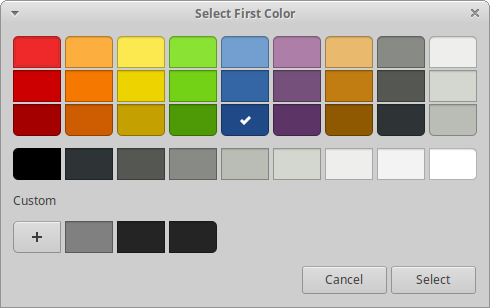
Pour définir l'arrière-plan comme une couleur unique ou un dégradé bicolore, définissez Style sur « Aucun », puis définissez Couleur sur l'entrée appropriée. Vous pouvez ensuite cliquer sur les boutons de couleur à côté de la liste déroulante pour ouvrir la boîte de dialogue Sélectionner une couleur. Vous avez la possibilité de sélectionner dans la liste des préréglages de couleurs, de cliquer avec le bouton droit sur un préréglage de couleurs pour personnaliser cette couleur ou de créer une couleur personnalisée à partir de zéro en appuyant sur le bouton plus.
Si vous disposez de plusieurs espaces de travail, également appelés bureaux virtuels, vous pouvez choisir d'afficher le même arrière-plan dans tous les espaces de travail ou d'utiliser un arrière-plan différent pour chaque espace de travail. Pour utiliser un arrière-plan différent, décochez la case Appliquer à tous les espaces de travail, puis déplacez la boîte de dialogue vers chaque espace de travail individuellement et sélectionnez un arrière-plan différent. Cela peut être fait en faisant glisser la fenêtre vers les coins gauche ou droit de l'écran ou en appuyant sur les raccourcis clavier Ctrl + Alt + Accueil ou Ctrl + Alt + Fin. C'est également le cas lorsque vous avez plusieurs moniteurs connectés, où chaque écran aura le fond d'écran par défaut à moins que la fenêtre ne soit déplacée vers d'autres écrans et que l'arrière-plan ne soit modifié.
|
|
|
|
Le moyen le plus simple de définir une image comme fond d'écran consiste à cliquer avec le bouton droit sur l'image dans l'espace de travail ou l'affichage actuel et à sélectionner Définir comme fond d'écran dans le menu contextuel. |
Dans l'onglet Icônes de la boîte de dialogue de paramètres du bureau, vous pouvez définir les propriétés des icônes qui apparaissent sur le bureau, notamment leur taille, leur disposition de tri, la taille de la police des étiquettes, le comportement d'activation des clics, si elles doivent ou non avoir des info-bulles et des miniatures, et lesquelles. les icônes système apparaissent par défaut. La liste déroulante Type d'icône vous offre la possibilité d'avoir des icônes de bureau pour les fichiers et les lanceurs, des fenêtres d'application réduites ou aucune icône du tout.
L'onglet Menus de la boîte de dialogue de paramètres du bureau fournit des options de personnalisation pour les deux menus qui peuvent apparaître lors de l'utilisation de la souris.
Menu du bureau - Ce menu apparaît lorsque vous cliquez avec le bouton droit sur le bureau. Vous pouvez choisir si ce menu inclut ou pas le  dans une hiérarchie arborescente.
dans une hiérarchie arborescente.
Menu liste des fenêtres - Ce menu apparaît lorsque vous cliquez avec le bouton central sur le bureau. Vous pouvez choisir d'afficher ou non ce menu, ainsi que les options de personnalisation des applications et de l'espace de travail au sein du menu.
Un thème de bureau est utilisé pour modifier l'apparence de l'interface graphique utilisateur (GUI) et peut comprendre de nombreux éléments, notamment le fond d'écran du bureau, le style et les couleurs de l'interface utilisateur, les polices, les icônes et les sons. Dans Xubuntu, vous pouvez modifier bon nombre de ces composants individuels afin que votre bureau soit aussi unique que vous le souhaitez.
Les trois principaux composants thématiques que vous devez connaître sont :
- il s'agit de l'apparence de la section extérieure d'une fenêtre, y compris la barre de titre et les bordures de la fenêtre. Il est également connu sous le nom de thème du gestionnaire de fenêtres.
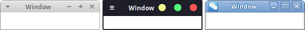
- il s'agit de l'apparence des éléments de l'interface utilisateur trouvés dans la section intérieure de la fenêtre, tels que les boutons, les barres de défilement et l'arrière-plan de la fenêtre. C'est également connu sous le nom de thème Gtk.
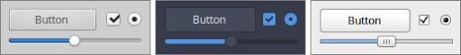
- Il s'agit du jeu d'icônes utilisé pour styliser les icônes trouvées dans les barres d'outils et les menus, sur les fichiers et dossiers, sur les lanceurs d'applications et les boutons. C'est également connu sous le nom de thème Icône.
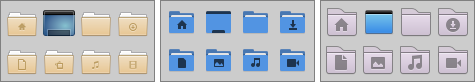
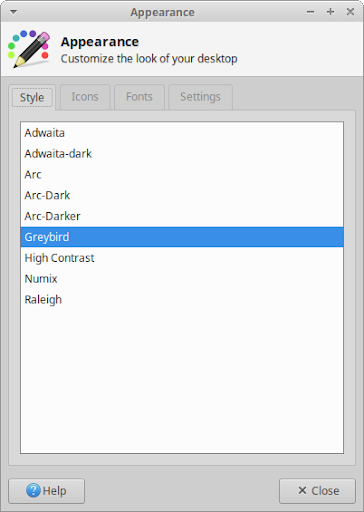
Ouvrez la boîte de dialogue de paramètres Apparence et vous serez sur l'onglet Style qui vous permettra de définir le thème de vos contrôles d'interface utilisateur (interface utilisateur) en sélectionnant une entrée dans la liste. Si vous passez à l'onglet Icônes, vous pourrez définir votre thème d'icônes en sélectionnant une entrée dans la liste. L'onglet Polices vous permettra de définir la police par défaut utilisée pour le texte de l'interface utilisateur, ainsi que de définir les options de rendu des polices. L'onglet Paramètres propose des options pour activer et désactiver les images dans les menus et sur les boutons, ainsi que pour modifier le style des entrées de la barre d'outils.
|
|
|
|
Les thèmes d'icônes ne fonctionneront pas tous bien avec les tableaux de bord sombres et certains arrière-plans de fenêtres. Si vous installez des applications qui utilisent leBoîte à outils de l'interface utilisateur Qt, telles que Qbittorrent ou Clementine, l'utilitaire de paramètres de Qt5 ( Si vous souhaitez modifier le thème du curseur de la souris, ouvrez l'onglet Thème de l'application Souris et pavé tactile. |
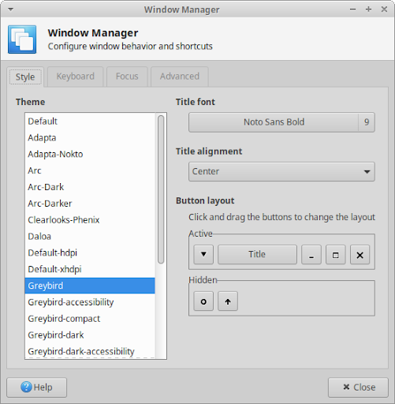
Une fois que vous ouvrez la boîte de dialogue des paramètres du gestionnaire de fenêtres, vous serez sur l'onglet Style qui vous permettra de définir le thème de la décoration des fenêtres, ainsi que de personnaliser les différents éléments de la barre de titre. Cela inclut l'alignement et la taille de police utilisés dans le texte de la barre de titre ainsi que la disposition et la visibilité des boutons de la barre de titre.
Xubuntu ne propose pas beaucoup d'effets de bureau, mais le compositeur Xfce est activé par défaut. Le compositeur Xfce est utilisé pour dessiner des ombres derrière les fenêtres et les panneaux, ainsi que pour définir la transparence des décorations de fenêtres et des fenêtres dans différents états. Pour accéder à ces effets de bureau, ouvrez la boîte de dialogue des paramètres Peaufinage des fenêtres puis son onglet Compositeur.
|
|
|
|
Si vous disposez d'un GPU bas de gamme ou si vous n'aimez pas les effets de bureau mentionnés, vous pouvez désactiver le compositeur en décochant Activer la composition d'affichage ou en modifiant les autres paramètres. |
Si la sélection de thèmes par défaut ne vous satisfait pas, vous pouvez facilement télécharger et installer de nouveaux thèmes. Parfois, les thèmes de décoration de fenêtre et de contrôle de l'interface utilisateur sont regroupés en un seul thème Gtk, tandis que les thèmes d'icônes peuvent également inclure un thème de curseur de souris. Vous pouvez trouver de nouveaux thèmes dans les référentiels de logiciels, tels que :
Thèmes d'IU - Adapta ( adapta-gtk-theme
adapta-gtk-theme arc-theme
arc-theme materia-gtk-theme
materia-gtk-theme
Thèmes d'icônes - Papirus ( papirus-icon-theme
papirus-icon-theme numix-icon-theme-circle
numix-icon-theme-circle moka-icon-theme
moka-icon-theme
Des thèmes supplémentaires peuvent être trouvés sur Internet, ainsi que  .deb
.deb
Thèmes d'IU - Xfce Simple Dark, Mint Mac Dark, Matcha, Plano, Pop, Flat Remix, Dracula
Thèmes d'icônes - Flat Remix, Paper
Si vous installez de nouveaux thèmes depuis les référentiels, ou via un fichier paquet  .deb
.deb
- Avec la boîte de dialogue de paramètres Apparence ouverte sur les onglets Style ou Icônes, vous pouvez faire glisser et déposer un fichier de thème .tar.xz compressé sur la liste de thèmes.
- Si vous installez des thèmes depuis Xfce-look.org, vous pouvez installer l'outil d'aide à l'installation ocs-url, puis cliquer sur les boutons « Installer » dans la colonne OCS-Install sur l'onglet Fichiers de la page du thème.
- Ouvrez le fichier compressé du thème de l'interface utilisateur ou de l'icône et extrayez son contenu dans le dossier approprié. Si ces répertoires n’existent pas, vous devrez d’abord les créer.
Thèmes d'IU -  /home/nomdutilisateur/.themes/
/home/nomdutilisateur/.themes/
Thèmes d'icônes -  /home/nomdutilisateur/.icons/
/home/nomdutilisateur/.icons/
|
|
|
|
La partie du chemin du dossier doit être remplacée par votre nom d'utilisateur. Sous Linux, les fichiers et répertoires commençant par . (point) sont masqués par défaut et pour les afficher dans le gestionnaire de fichiers, ouvrez le menu Affichage et cochez l'entrée Afficher les fichiers cachés ou appuyez sur Ctrl + H. Pour les afficher dans les boîtes de dialogue d'ouverture ou d'enregistrement de fichiers, cliquez avec le bouton droit dans le zone de liste de fichiers de la boîte de dialogue puis sélectionnez Afficher les fichiers cachés dans le menu contextuel. |
 |
 |
|
| Chapitre 5. Gestion des logiciels |

|
Chapitre 7. Paramètres - Matériel |